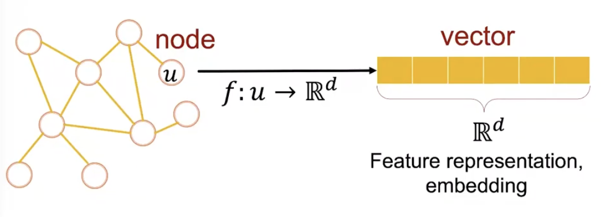

3.1 Node Embedding
Graph Representation Learning
representation learning 목적은 feature engineering을 통해 직접 node의 feature를 지정하는 대신, feature를 자동으로 학습하는 것입니다.
그림에서와 같이, representation learning을 거쳐 node u를 d차원 vector로 표현하게 됩니다. 이때, feature를 표현하는 vector를 ‘feature representation’ 혹은 ‘embedding’이라고 부릅니다. 이 vector는 node의 특징을 잘 담아내야 하며, 그래프의 전반적인 구조의 의미도 포함해야 합니다.

Why Embedding?
embedding space내에 표현된 node들은 유사성(similarity) 가질수록 비슷한 embedding을 가진다는 것이 핵심입니다. 이렇게 표현된 node들은 후속 작업인 예측 task (node classification, link prediction, graph classification 등)에 효과적으로 활용됩니다.
Example Node Embedding
DeepWalk 의 연구로, Zachary’s Karate Club network를 2차원 vector의 feature로 표현했습니다. 같은 색상을 가진 node끼리 비슷한 vector 값을 갖는 것을 확인할 수 있으며, 이를 통해 embedding 작업이 꽤 성공적으로 이루어졌다고 판단할 수 있습니다.

Node Embeddings: Encoder and Decoder
우선 간단한 그래프에서 시작해봅시다!
feature는 없고, 연결 관계만(adjacency matrix)만 존재하는 undirected 그래프가 있다고 합시다. 이때 embedding 목표는 embedding후의 embedding space에서의 각 node끼리의 유사성(similarity)과 그래프상에서의 유사성이 비슷해지는 것입니다. embedding space에서의 유사성을 측정할 때는 vector간의 dot product 연산을 수행하는 것이 일반적입니다. dot product은 \(a \cdot b = |a||b|cos\theta\) 이므로, 두 vector간의 각도가 작을수록(=가까움, 비슷함), 큰 값을 갖게 됩니다. 자 이제, embedding space에서의 유사성은 측정할 수 있게 되었으므로, 그래프상에서의 유사성을 측정할 수 있는 similarity function을 정의해야 합니다.
Goal : \(\red {similarity(u,v)} \;\approx\; \green{z^T_v z_u}\)

Learning Node Embeddings
1) Encoder를 통해 node를 embedding값으로 변환합니다. Encoder : \(ENC(v) = z_v\), \(z_v : d\)-dimensional embedding 이때, embedding 차원으로 보통 64~1000을 채택합니다.
2) 그래프 상에서의 노드 간 유사성을 측정할 similarity function을 정의합니다.
3) Decoder는 embedding값들 간의 유사성을 측정합니다. → similarity score Decoder : \(DEC(z^T_vz_u)\)
4) \(\red {similarity(u,v)} \;\approx\; \green{z^T_v z_u}\)가 될 수 있도록, Encoder의 parameter들을 최적화 합니다.
Shallow Encoding
가장 간단한 encoder는 단순한 embedding-lookup(→조회)입니다.
\(ENC(v) = z_v= Z \cdot v\) , \(Z\in\R^{d*|v|}\), \(v\in I^{|v|}\)
여기서 \(**Z\)는 모든 node의 embedding을 포함하는 matrix로 각 column이 하나의 node embedding을 의미합니다. \(v\)는 indicator vector로, 현재 표현할 node만 1이고 나머지는 0인 vector입니다. 이때의 목표는 matrix \(Z\)를 최적화하는 것입니다. 다음 방법을 이용한 대표적인 알고리즘은 DeepWalk와 node2vec**이 있습니다.

하지만 이때의 문제점은 최적화해야 할 embedding matrix \(Z\)의 parameter수가 매우 커질 수 있다는 점입니다. 예를 들어, 10억 개 node로 구성된 그래프에 대해서 최적화 해야 할 parameter는 (10억 * embedding dimension)개 입니다. 따라서 해당 방법은 단순 lookup 으로 매우 간단할 수 있지만, 확장 가능성이 작습니다.(= low scalability)
(vs. deep encoder(GNNs)는 6장에서부터 다룰 예정입니다🙂)
Note on Node Embeddings
node embedding을 찾는 것은 unsupervised/self-supervised 방식으로 구분될 수 있습니다. 위에서 언급했듯이 node label, node feature 등을 이용하지 않고, graph network의 구조를 보존한 채 node embedding을 찾기 때문입니다. 따라서, 해당 방법은 task independent로, 어떤 task든 적용 가능합니다.
3.2 Random Walk Approaches for Node embeddings
본격적인 node embedding 방법 소개에 앞서, 용어부터 살펴봅시다!
- Vector \(z_u\) : node u의 embedding → 우리가 찾고자 하는 것.
- Probability \(P(v|z_u)\) : node u에서 시작해서 random walk로 node v에 방문할 확률
- Non-linear function :
- softmax
입력받은 값을 출력으로 0~1 사이의 값으로 모두 정규화하며 출력값들의 총합은 항상 1이 되는 특성을 가진 함수로, 분류하고 싶은 class 수만큼 출력으로 구성합니다. 가장 큰 출력값을 부여받은 class가 확률이 가장 높음을 의미합니다.
- sigmoid function
모든 실수 입력 값을 0보다 크고 1보다 작은 미분 가능한 수로 변환하는 특징을 갖습니다.
- Random Walk :
node 4에서 시작한다면, 이동 가능한 neighbor node중 random으로 하나를 선택하여 이동합니다. 이후, 고정된 수만큼 반복적으로 이동하면 됩니다. random walk를 수행하면 그래프상에서 이동한 일련의 node들이 결과로 도출됩니다. 아래 그림에서는 {4,5,8,9,8,11} 입니다.

random walk에서의 \(**z^T_v z_u\)는 node u와 node v가 random walk 중 동시에 방문 될 확률**을 의미합니다. random walk 전략 \(R\)이 있다고 할 때, node u에서 시작하여 전략 \(R\)에 따라 random walk를 수행했을 때, node v를 방문할 확률, \(P_R(v|u)\) 을 예측합니다. 이후, 두 vector 사이의 각도 \(\theta\)가 \(P_R(v|u)\)에 비례하도록 embedding 을 최적화합니다.

Why Random Walks?
장점 1) Expressivity
local(본인)뿐만 아니라, higher-order neighborhood(여러 hop 떨어진 이웃)들의 정보를 포함할 수 있게 됩니다.
장점 2) Efficiency
모든 node를 한꺼번에 고려하지 않고, random walk를 통해 방문한 node들의 쌍만 고려하여 학습할 수 있습니다.
Unsupervised Feature Learning
다시 unsupervised feature learning에서의 목적으로 돌아와 보면, 유사성을 보존한 채 node embedding을 찾고자 합니다. 설득력 있는 node embedding이 되기 위해서 가까운(nearby) 노드끼리 비슷한 embedding을 갖도록 해야 합니다.
자 그럼 ’가까운’은 어떻게 정의할 수 있을까요?? 여기서 random walk가 등장합니다!! 바로 ’random walk로 방문하게된 이웃들을 ’가깝다’라고 볼 수 있습니다.
\(N_R(u)\) : random walk 전략 \(R\)에 따라 node u에서 출발하여 방문하게된 이웃들(neighborhood)
Feature Learning as Optimization
그래프 \(G = (V,E)\)가 주어졌을 때,
node embedding function, \(f: u \rightarrow \R^d : f(u) = z_u\) 을 최적화해야합니다.
이를 위해서, log-likelihood objective는 \(max_f \sum_{u\in V}\log P(N_R(u)|z_u)\) 으로, 해당 값이 최대화 되는 함수 \(f\)를 찾아야합니다.
Random Walk Optimization
Step 1) random walk strategy \(R\)에 따라서 각 node u에서 고정된 크기의 짧은 random walk를 수행합니다.
Step 2) 각 node 마다 multiset 이웃 집합, \(N_R(u)\)을 모읍니다. *multiset : random walk동안 특정 노드를 여러 번 반복할 수 있으므로, 중복된 원소를 가질 수 있습니다.
Step 3) node u가 주어졌을 때, 이웃들 \(N_R(u)\) 을 예측할 수 있도록 embedding을 최적화합니다.
\(max_f \sum_{u\in V}\log P(N_R(u)|z_u)\)
위 식은 모든 node u, 그리고 그 각각의 이웃 노드 v에 대한 식으로 풀어볼 수 있습니다.
\(L = \sum_{u\in V}\sum_{v\in N_R(u)} -\log(P(v|z_u))\),
또한, node u에 가까운 node v를 판별(비교)하고자 하는 점에서 softmax를 사용하여, \(p(v|z_u)\) 를 표현할 수 있습니다.
\(p(v|z_u) = \frac{exp(z^T_uz_v)}{\sum_{n\in V}exp(z^T_u z_n)}\)

다음과 같이 정의한 loss function \(L\) 이 최소화되도록 \(z_u\)를 찾습니다!!
하지만, 다음 식은 매우 계산이 expensive 합니다. 모든 node에 대한 계산이 2번이나(위 그림에서 파랑색, 노랑색 부분에 해당) 중첩되게 이루어지기 때문에, complexity가 무려 \(O(|V|^2)\)입니다.
이를 실제에서 활용하기 위해선, softmax 항의 분모에 해당하는 부분을 근사해야 합니다.
→ 방법은, ‘Negative Sampling’입니다!!
모든 노드에 대한 값을 구해 normalize하는 것이 아니라, k개의 random negative sample에 대해 정규화를 진행합니다. 이때 k개의 sample을 sampling할 때는 degree에 기반하여 bias sampling(\(n_i \sim P_v\))을 수행합니다. higher degree(undirected graph의 경우, 연결된 edge 수)를 가질수록 sample 될 확률이 높아집니다. 샘플의 갯수 k가 커질 수록, 더 정교한 예측이 가능하지만, 동시에 bias가 커지는 단점이 존재합니다. 보통, k는 5~20으로 지정합니다.

loss function을 최적화할 때 보통 stochastic gradient descent를 사용합니다. gradient descent란, random point에서 시작하여 미분값을 계산하고 learning rate에 맞게 방향을 조금씩 변화합니다. 이 작업을 수렴할 때 까지 반복합니다. 특히, stochastic gradient descent는 모든 example에 대해서 해당 계산을 수행하는 것이 아니라, 매번 랜덤으로 선택한 하나의 example에 대해서만 미분값을 계산하고 업데이트 해나갑니다.
자 여기까지 Random Walk 과정을 요약해보자면,
Step 1) random walk strategy \(R\)에 따라서 각 node u에서 고정된 크기의 짧은 random walk를 수행합니다.
Step 2) 각 node 마다 multiset 이웃 집합, \(N_R(u)\)을 모읍니다.
Step 3) loss funcion : \(L = \sum_{u\in V}\sum_{v\in N_R(u)} -\log(P(v|z_u))\) 다음 loss function을 negative sampling을 사용해 softmax 부분을 근사하고, stochastic gradient descent를 통해 최적화여 embedding을 구합니다.
How should we randomly walk?
그렇다면 효과적인 random walk 전략 \(R\)은 무엇일까요?? 고정 크기 만큼의 random walk와 같은 단순한 방법은 유사성을 표현하기에 매우 한정적입니다. 이를 극복하기 위해 등장한 방법이 node2vec 입니다. 표현력이 좋은 (expressive)한 이웃들을 모으기 위해 ‘biased 2nd order random walk \(R\)’ 이 사용됩니다.
node2vec : Biased Walks
핵심 아이디어는 local + global 탐색의 tradeoff를 잘 고려하여 biased walk를 수행하는 것입니다. 이때 local은 BFS(Breadth-First Search) 너비 우선 탐색을 통해, global은 DFS(Depth-First Search) 깊이 우선 탐색을 통해 얻을 수 있습니다.

Interpolating BFS and DFS
node u 에 대한 \(N_R(u)\)를 모을 때, 2가지 hyper-parameter를 지정하여 BFS와 DFS 방법을 동시에 적절히 활용할 수 있습니다.
1) return parameter \(p\) : 이전 node로 돌아갈 확률
2) in-out parameter \(q\) : BFS(inwards)와 DFS(outwards)간의 비율(ratio)
Biased 2nd-order random walks
다음 그림은 random walk 중 node \(s_1\)에서 node \(w\)로 이동한 상황입니다.
이제 \(w\)에서 취할 수 있는 행동 유형은 총 3가지, <(1) 이전 노드 \(s_1\)으로 돌아가기, (2) \(s_1\)에서 동일하게 1 hop 떨어져 있는 \(s_2\)로 이동, (3)더 멀리 \(s_3, s_4\)로 이동 >이 있습니다. 앞서 정의했던 parameter들을 적용해보면, \(1/p\)가 다시 돌아갈 확률, \(1/q\) 를 더 멀리 이동할 확률로 표현할 수 있습니다. 이후, \(w\)에서의 4가지 선택지(\(s_1, s_2, s_3,s_4\))에 대한 확률을 1로 맞추어 정규화합니다. BFS와 같이 inwards를 돌아다니게 하려면 p값을 낮추면 되고, DFS와 같이 outwards를 돌아다니려면 q값을 낮추면 됩니다.

node2vec algorithm
Step 1) random walk 확률을 계산합니다.
Step 2) 각 노드 u 에서 길이 \(l\) 만큼의 random walk를 \(r\)번 시뮬레이션합니다.
Step 3) Stochastic gradient descent를 사용하여 node2vec objective function을 최적화합니다.
시간 복잡도는 linear-time이며, 각 step이 병렬적으로 수행될 수 있습니다. 다만, 해당 방법의 단점은 모든 node들이 각각의 node embedding을 학습해야 한다는 것입니다. 따라서 그래프 크기가 커질수록, 더 많은 embedding을 학습해야 합니다.
- 일반적으로 node2vec은 node classification을 잘 수행한다고 알려져있으며, random walk는 전반적으로 우수한 성능을 보입니다. 하지만 어떤 알고리즘을 사용해야 하는가는 본인의 연구에 제일 잘 맞는 방법을 채택해야 합니다.
3.3 Embedding Entire Graphs
3장에서는 node level에서 벗어나 그래프 전체를 embedding 해봅시다.

방법 1) node embedding의 합
random walk 혹은 node2vec에서 구한 node embedding을 이용하여 계산(합/평균) 합니다.
\(z_G = \sum_{v\in G }z_v\)
- 해당 방법은 molecules를 분류하는 연구에 성공적으로 적용되었습니다.
방법 2) ‘virtual node’
그래프의 특정 부분을 대표하는 ’virtual node’를 추출하고, 여기에 graph embedding 기술을 적용합니다.

방법 3) Anonymous Walk Embeddings
첫 번째로 방문한 node부터 순서대로 index를 부여합니다. random walk 로 이동하면서 index sequence를 기록합니다. 방문한 node가 실제 어떤 node인지 상관없이 방문한 순서에 따라 index가 주어집니다.

random walk 길이가 3일때, 가능한 anonymous walk의 수는 총 5개 입니다. → \(w_1=111,w_2=112,w_3=121,w_4=122,w_5=123\)
가능한 anonymous walk수는 random walk 길이에 따라 exponential하게 증가합니다.

Simple Use of Anonymous Walks
step 수 \(l\) 을 정한 뒤, 가능한 anonymous walk를 계산합니다. 이후 각 walk에 대한 probability distribution을 계산합니다. 예를 들어, \(l=3\)일 때 가능한 walk는 5개였습니다. 따라서 각 5개 walk에 대한 확률을 계산하여, 해당 그래프를 5차원의 vector로 표현할 수 있습니다.
\(Z_G[i]\) = probability of anonymous walk \(w_i\)
Sampling Anonymous Walks
그렇다면 적당한 random walk는 몇 개 일까요? \(\delta\)의 확률보다 낮게 \(\epsilon\) 이상의 error를 갖게 하기 위해선 다음 식을 만족해야 합니다.

New idea : Learn Walk Embeddings
새로운 아이디어는 anonymous walk \(w_i\)의 embedding \(z_i\)를 학습하는 것입니다. 이를 통해, 그래프 embedding이 가능합니다. \(Z = \{z_i : i = 1 \dots \eta \},\;\eta\) : sampled anonymous walks 갯수
anynomous random walk를 샘플링합니다. 이후 \(\Delta\)-size window 내에 어떤 walk 가 함께 발생할지 예측합니다. 예를 들어, \(\Delta\)가 1일 때 경우, 직전과 직후에 어떤 walk가 발생할 지 예측하는 것입니다. 이를 수식으로 풀어보면 objective는 다음과 같습니다. graph embedding \(Z_G\)와 time window 내에 walk들(\(w_{t-\Delta}, \dots, w_{t+\Delta}\))이 주어졌을 때 \(w_t\)에 대한 log probability를 최대화해야 합니다. 모든 node가 출발점이 되어서 각각의 objective를 계산하고, 이를 모두 더합니다.

이제 node u 의 이웃 \(N_R(u)\)은 random walk 의 set으로 표현됩니다.
\(N_R(u) = \{w_1^u, w_2^u,\dots, w_T^u\}\)

다음과 같이 graph embedding \(Z_G\)를 구한뒤, inner product 혹은 neural network를 거쳐 graph classification과 같은 예측 작업에 사용할 수 있습니다.
Summary of Graph embedding
지금까지, 총 3가지 그래프 embedding 방법에 대해 다루었습니다.
방법 1) deep walk 혹은 node2vec으로 구한 node embedding을 합하거나 평균내기
방법 2) virtual node와 같이 super-node구해서 embedding하기
방법 3) Anonymous Walk Embedding
3-1) anonymous walk sample을 구한 뒤, 각각의 walk가 몇번 발생했는지 비율 계산
3-2) anonymous walk를 embedding하고 이를 합쳐 graph embedding하기
*차후의 강의에서는 Hierarchical Embedding에 대해 다룹니다(Lecture 8).
graph상의 node들을 계층적으로 묶은 뒤, 이들을 합/평균 내어 graph embedding 합니다.

How to Use Embeddings
열심히 구한 embedding은 아래와 같이 활용 가능합니다🙂🙂
1) Clustering/ community detection
2) Node classification
- 3) Link Prediction
-
2개의 embedding(\(z_i,z_j\))에 대해 concatenate, hadamard, sum/avg, distance 계산
4) Graph classification